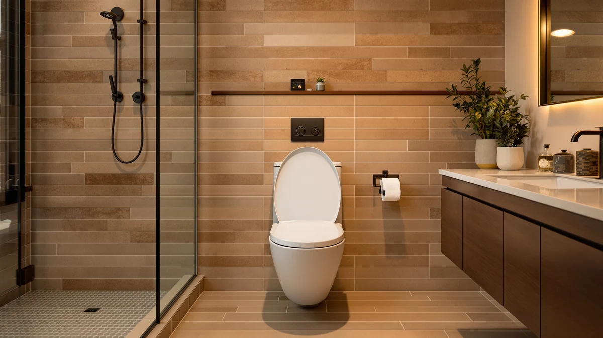

Best Thing to Clean Toilet Seats with: Complete Guide (2026)
Prices and picks verified as of September 2026. Independent, reader-supported reviews.


Things to Know Before You Buy
- A mild, non-abrasive cleaner and a microfiber cloth handle almost every toilet seat, regardless of material.
- Undiluted bleach and ammonia-based sprays can yellow plastic and corrode metal hinges over months of use.
- Most residue and odor collect around the hinges, not the seat surface, so that area needs separate attention.
- Quick-release hinges let you lift the seat off entirely, which makes deep cleaning faster and more thorough.
- Drying the seat after each cleaning matters as much as the product you use, since trapped moisture breeds bacteria.
The best thing to clean toilet seats with is a mild, pH-balanced cleaner and a soft microfiber cloth, not the strongest disinfectant on the shelf. Most people reach for whatever bathroom spray is closest, and that habit is what dulls a plastic seat's finish and corrodes its hinges years before the seat itself wears out.
We compared manufacturer care instructions, verified owner reviews, and the materials used across dozens of toilet seats to figure out which cleaning products are safe and which ones quietly cause damage. The pattern holds across brands: seats fail less often from daily use than from the wrong cleaner applied the wrong way, especially around the hinges where moisture and residue collect first.
Below, we break down what your seat is actually made of, which cleaning products match each material, the mistakes that shorten a seat's life, and how a seat's hinge design changes how easy it is to keep clean. If you are shopping for a replacement seat, we also cover which designs make ongoing cleaning simpler from day one.
What You Need to Know
Toilet seats are built from a small handful of materials, and each one reacts differently to cleaning products. Molded polypropylene, the plastic used on most budget and mid-range seats, is durable and non-porous, but it scratches under abrasive pads and those scratches then trap bacteria. Wood-core seats wrapped in a vinyl or lacquer coating look and feel different, and once that coating is scratched or worn through, water can seep into the wood underneath and cause swelling or delamination.
The hinges are the part manufacturers design around most and the part most cleaning routines ignore. Metal hinges on painted or chrome-plated seats can pit and rust if a cleaner sits wet against them, while the plastic hinges on quick-release seats hold up better to frequent contact with water and cleaner. Reviewers consistently note that seats which loosen or squeak within a year usually trace back to hinge corrosion rather than a manufacturing defect.
Owners report that the best thing to clean toilet seats with changes slightly by material, but the underlying rule stays constant across every seat type: a gentle, diluted cleaner applied with a soft cloth removes residue without stripping the surface finish that keeps the seat easy to wipe down in the first place. Once that finish degrades, every future cleaning gets harder, because the roughened surface holds onto grime instead of releasing it.
Types and Categories
Cleaning products for toilet seats fall into a few broad categories, and each one suits a different situation. Mild soap and warm water covers daily wiping for any seat material and rarely causes damage even with frequent use. Diluted white vinegar cuts through hard water spots and light mineral buildup without leaving behind the residue that some commercial sprays do, though it should never sit undiluted on painted or lacquered finishes. Store-bought bathroom cleaners labeled non-abrasive or bathroom-safe are formulated for exactly this surface and remain the most reliable middle ground between plain soap and a full disinfectant.
Disinfecting wipes handle quick, single-pass cleaning and work well for households managing illness or frequent guests, but the alcohol in many formulas dries out rubber bumpers and gaskets faster than a liquid cleaner would. Enzyme-based cleaners target odor at the source rather than masking it, which matters more for seats used by children or pets, and they tend to be gentler on both plastic and wood-core seats than chlorine-based products.
Seat design is its own category worth separating from cleaning product choice. Standard fixed-hinge seats require you to clean around the hardware in place, while quick-release and quick-flip seats detach with a button or lever so the hinge area gets the same access as the rest of the seat. That design difference determines how thoroughly a given cleaner can actually reach the parts of the seat that collect the most grime.
How to Choose
Start with what your seat is made of before you pick a cleaner. Check the manufacturer's care instructions if you still have them, or look at the seat itself: a glossy, uniform surface is usually molded plastic and tolerates most non-abrasive cleaners, while a seat with visible wood grain under a coating needs gentler treatment and should never sit wet for long. When you are unsure, choose the mildest option that gets the job done and test it on a small hidden area first.
Match the cleaner's strength to how the seat gets used. A household with kids, guests, or someone managing illness benefits from an EPA-registered disinfectant used occasionally alongside daily soap-and-water wiping, rather than a strong disinfectant used every single time. Reserving the harsher product for periodic deep cleaning, instead of daily use, extends the life of the seat's finish considerably.
Factor the seat's hinge design into the decision alongside the cleaner itself. If your current seat has fixed hinges that trap grime you cannot reach, that is worth weighing against the cost of a replacement seat with quick-release hardware, since the ongoing cleaning becomes noticeably easier and faster. This is also the best thing to clean toilet seats with in the long run: a seat that lets you access every surface, paired with a cleaner gentle enough to use often without damage.
Finally, consider how the cleaner smells and how it is applied. Sprays that require you to mist directly onto the seat can push liquid into hinge gaps and screw holes, while a cloth dampened with cleaner first gives you more control over where the moisture goes. That small change in application method does more to protect the hardware than switching between cleaning brands ever will.
Common Mistakes to Avoid
Spraying undiluted bleach directly onto the seat is the most common mistake owners report, and it is also the most damaging. Full-strength bleach breaks down the protective coating on painted and lacquered seats within a few uses, leaving a chalky finish that then absorbs stains instead of shedding them. If you use bleach at all, dilute it well below label strength for general cleaning and rinse the surface afterward.
Abrasive pads and powdered scouring cleaners scratch plastic seats even when the scratches are too small to see immediately. Those micro-scratches become the exact spots where bacteria and residue collect on the next use, so a seat cleaned with abrasive tools often looks worse within weeks than one cleaned gently and consistently. A soft cloth or non-scratch sponge removes the same grime without creating that problem.
Letting cleaner pool around the hinges is another frequent issue, since most people spray the whole seat at once and move on. Liquid that sits against metal hinges accelerates rust, and liquid that seeps into a wood-core seat's screw holes causes swelling that eventually loosens the entire assembly. Wipe the hinge area separately and dry it before closing the lid.
Mixing cleaning products, such as bleach followed immediately by an ammonia-based glass cleaner, creates toxic fumes in the small, enclosed space of a bathroom. Stick to one product per cleaning session and ventilate the room, especially if you are using a disinfectant stronger than daily soap and water.
Care and Maintenance
A quick daily wipe with a damp cloth and mild soap prevents the buildup that eventually requires a stronger cleaner to remove. Reviewers who keep up this habit report their seats staying glossy and stain-free for years, while seats cleaned only occasionally tend to need harsher products to get back to a baseline level of clean.
Set aside time every one to two weeks for a deeper pass that includes the hinges, the underside of the seat, and the small gap where the seat meets the bowl. If your seat has quick-release hardware, lift it off for this step; if it does not, angle a cloth-wrapped finger or a small brush into the hinge area rather than relying on spray alone to reach it.
Dry the seat fully after cleaning instead of letting it air dry with moisture sitting in the hinge gaps. A microfiber cloth run over the whole surface, including underneath, takes under a minute and prevents the trapped moisture that leads to both odor and hardware corrosion. Check the hinge screws every few months and tighten any that have loosened, since a wobbling seat wears unevenly and becomes harder to clean thoroughly over time.
Our Top Picks
If your current seat makes cleaning harder than it should be, replacing it can matter more than switching cleaning products. These three seats stood out in our comparison for design choices that reduce how much grime and moisture can hide around the hinges.

Editor’s Pick
Bath Royale Soft Close Toilet
A molded one-piece seat with a smooth underside and minimal seams, so a quick wipe reaches nearly the whole surface without catching on ridges.
$69.95
Check Price on Amazon
Best Value
1M Family Toilet Seat Patented
The built-in child seat folds flush against the main lid instead of leaving a raised edge, which cuts down on the crevices where residue typically collects.
$39.99
Check Price on Amazon
Premium Choice
Quick Flip Toilet Seat with
Tool-free quick-release hinges let you lift the entire seat off the bowl, giving you full access to the hinge area that a fixed seat never lets you reach.
$54.99
Check Price on AmazonFrequently Asked Questions
What is the best thing to clean toilet seats with?
A mild, pH-balanced bathroom cleaner or a diluted dish soap solution applied with a microfiber cloth is the best thing to clean toilet seats with. It lifts grime without breaking down the plastic finish or corroding the metal hinges the way harsh chemicals and abrasive pads can.
Can I use bleach to clean a toilet seat?
Diluted bleach is safe for occasional disinfecting on solid plastic seats, but full-strength bleach can yellow the surface and pit chrome hinges over time. Rinse thoroughly and dry the seat afterward so no residue sits against the hinge hardware.
Why does the area around the hinges get dirty so fast?
Hinges trap moisture and are harder to reach with a cloth, so residue builds up there before it shows up anywhere else on the seat. Seats with quick-release hinges solve this by letting you lift the seat off to clean underneath.
Are disinfecting wipes safe for daily use on a toilet seat?
Occasional use is fine, but the alcohol in most disinfecting wipes dries out rubber bumpers and can dull a painted or lacquered finish with daily use. Save wipes for illness or guests and rely on soap and water the rest of the time.
How often should I deep clean a toilet seat?
A quick wipe daily and a deeper clean of the hinges and underside every one to two weeks keeps most seats free of buildup. Households managing illness or young kids may want to shorten that interval to once a week.
Verdict
The best thing to clean toilet seats with is a mild, non-abrasive cleaner paired with a microfiber cloth, used consistently rather than a harsh disinfectant used occasionally. That combination protects the seat's finish, keeps the hinges from corroding, and takes less effort over the life of the seat than repairing damage caused by bleach or abrasive scrubbing. If your current seat's hinge design makes that routine harder than it needs to be, a design like the Bath Royale Soft Close, with its smooth one-piece surface and minimal seams, removes most of the friction from the process. Whichever cleaner you choose, the underlying principle stays the same: gentle and frequent beats strong and occasional, both for how the seat looks and how long it lasts.